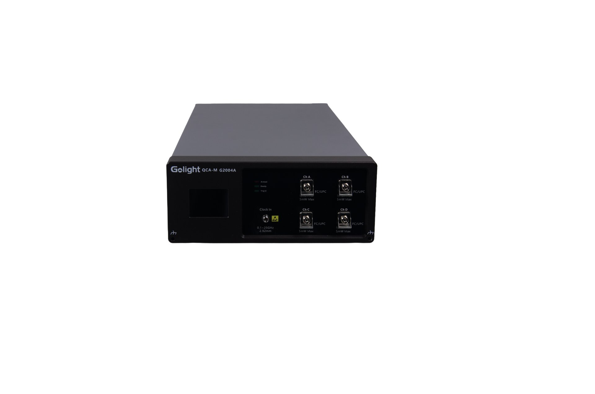

Optical Sampling Oscilloscope · SCPI Remote Programming Reference
This guide is the SCPI remote programming reference for the G2004A optical sampling oscilloscope. The command set follows the SCPI standard, and each command documents its command syntax, query syntax, parameters, and return values.
